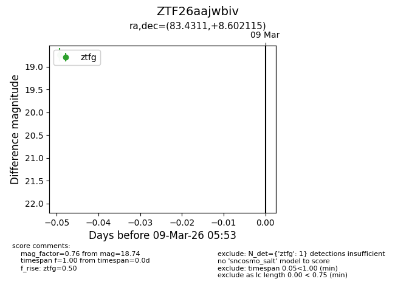
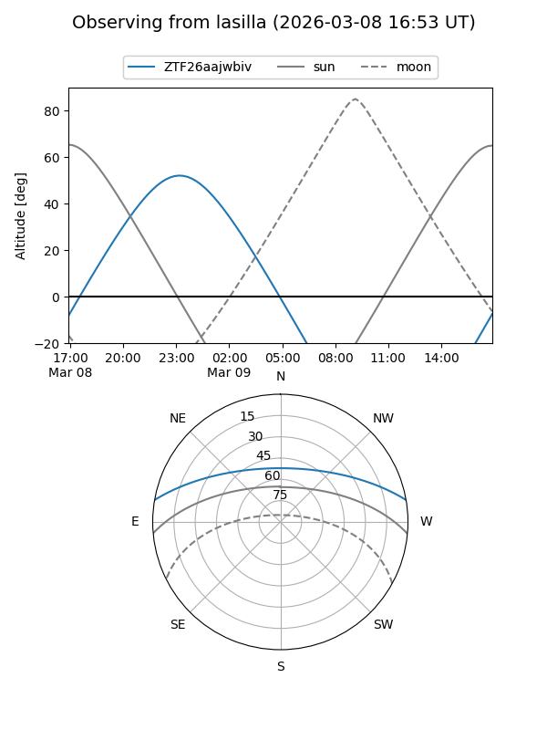
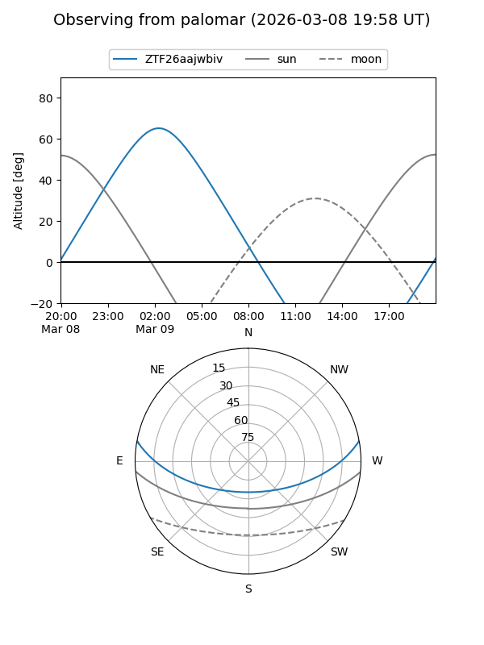

ZTF26aajwbiv
Target ZTF26aajwbiv at 2026-03-09 05:54
Aliases and brokers:
FINK: link
Lasair: link
ALeRCE: link
alt names
ZTF26aajwbiv (ztf,fink_ztf)
Coordinates:
equatorial (ra, dec) = 83.4311,+8.60211
equatorial (HMS+DMS) = 05:33:43.47,+08:36:07.61
galactic (l, b) = (196.0441,-12.97360)
Flags:
Photometry:
last ztfg=18.74
1 ztfg detections
Lightcurve

Visibility


Additional plots